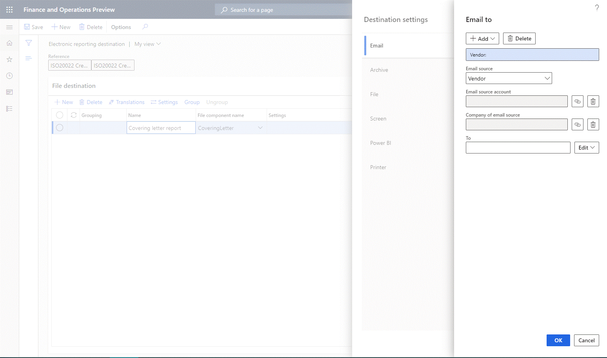

Email ER destination type
When an Electronic reporting (ER) format is run, one or more outbound documents can be generated. Folder or File format components are used in ER formats to specify the structure of outbound documents. You can configure an email destination for these types of components to send outbound documents as email attachments.
You can configure an email destination for each Folder or File component of an ER format. In this case, each outbound document is emailed individually. Based on this destination setting, a generated document is delivered as an attachment of an email.
Note
If no document is generated, because the Enabled expression for the relevant File component has been configured to return a False Boolean value, no email is sent, even if an email destination is configured and enabled for the component.
You can also group several Folder or File components together, and then configure an email destination for all the components in the group. In this case, all outbound documents that are generated by components that belong to the group are sent as multiple attachments of a single email. Based on this destination setting, each generated document is delivered as an attachment of a single email.
Note
If at least one document is generated by a File component in a group of components, an email is sent. If no document is generated by grouped components, because the Enabled expression for each File component has been configured to return a False Boolean value, no email is sent, even if an email destination is configured and enabled for that group of components.
Email is the only destination that can be configured for a group of components. To deliver a document that is emailed based on the email destination setting for a group, add one more destination record, select the component that you want, and then configure another destination for this record.
Multiple groups of components can be configured for a single ER format configuration. In this way, you can configure an email destination for every group of components and an email destination for every component.
Configure an email destination
To send an output file or several output files by email, on the Electronic reporting destination page, on the File destination FastTab, select a component or group of components in the grid, and then select Settings. In the Destination settings dialog box that appears, on the Email tab, set the Enabled option to Yes. You can then specify email recipients, and edit the subject and body of the email message. You can either set up constant text for the email subject and body, or use ER formulas to dynamically create email texts.
You can configure email addresses for ER in two ways. The configuration can be completed in the same way that the Print Management feature completes it, or you can resolve an email address by using a direct reference to the ER configuration through a formula.
{kind=link}
Email address types
If you select Edit next to the To or Cc field in the Destination settings dialog box, the Email to dialog box appears. Select Add, and then select the type of email address to use. Two types are currently supported: Print Management email and Configuration email.
{kind=link}
Print Management email
If you select Print Management email as the email address type, you can enter fixed email addresses in the Email to dialog box by setting the following fields:
- In the Email source field, select None.
- In the Additional email addresses, separated by ";" field, enter the fixed email addresses.
Alternatively, you can obtain email addresses from the contact details of the party that you generate an outbound document for. To use email addresses that aren't fixed, in the Email source field, select the [role (This is an external linThis link was changed due to HTMLfromRepoGenerator)](../../fin-ops/organization-administration/overview-global-address-book.md#party-role (This is an external linThis link was changed due to HTMLfromRepoGenerator)s) of the party for a file destination. The following roles are supported:
- Customer
- Vendor
- Prospect
- Contact
- Competitor
- Worker
- Applicant
- Prospective vendor
- Disallowed vendor
For example, to configure an email destination for an ER format that is used to process vendor payments, select the Vendor role.
After you select the desired role, select the Bind button (chain symbol) next to the Email source account field to open the Formula designer page. You can then use this page to configure a formula that returns, at runtime, the account number of the party that is assigned to the configured role from the processed document to the email destination.
Note
Formulas are specific to the ER configuration.
On the Formula designer page, in the Formula field, enter a document-specific reference to a supported role. Instead of typing the reference, in the Data source pane, find and select the data source node that represents an account of the configured role, and then select Add data source to update the formula. For example, if you configure the email destination for the ISO 20022 Credit Transfer configuration that is used to process vendor payments, the node that represents a vendor account is '$PaymentsForCoveringLetter'.Creditor.Identification.SourceID.

If the account numbers of the configured role are unique for the whole instance of Microsoft Dynamics 365 Finance, the Company of email source field in the Email to dialog box can remain blank.
Alternatively, you might have a situation where different parties in the Global address book (This is an external linThis link was changed due to HTMLfromRepoGenerator) have been registered in different companies (legal entities) in such a way that they all use the same account number to fill the configured role. In this case, account numbers for the configured role aren't unique for the whole Finance instance. Therefore, to explicitly select a party, you can't specify only an account number. You must also specify the company that the party has been registered in the scope of to fill the configured role. Select the Bind button (chain symbol) next to the Company of email source field in the Email to dialog box to open the Formula designer page. You can then use this page to configure a formula that returns, at runtime, the code of the company that the desired source must be found in the scope of.
Tip
If you must use the company code to run an ER format, but the ER format doesn't provide any data source that the company code can be obtained from, configure the GetCurrentCompany() formula by using the built-in GETCURRENTCOMPANY ER function.
Note
Formulas are specific to the ER configuration.
To specify the type of email addresses that must be used at runtime, in the Email to dialog box, select Edit next to the To field to open the Assign email address drop-down dialog box. Then set the following fields:
- In the Purpose field, select the desire purposes. Only email addresses of the selected purposes from contacts of the discovered party will be used.
- Set the Primary contact option to Yes to use an email address that is configured for the discovered party as the primary email address.
Note
If purposes are selected in the Purpose field and the Primary contact option is set to Yes at the same time, every email that satisfies at least one configured criterion will be used at runtime.
Configuration email
Select Configuration email as the email address type if the configuration that you use has a node in the data sources that returns either a single email address or multiple email addresses that are separated by semicolons (;). You can use data sources and functions in the formula designer to get a correctly formatted email address or correctly formatted email addresses that are separated by semicolons. For example, if you use the ISO 20022 Credit Transfer configuration, the node that represents the primary email address of a vendor from the vendor contact details that the covering letter should be sent to is '$PaymentsForCoveringLetter'.Creditor.ContactDetails.Email.
{kind=link}
Group format components
To group format components, on the Electronic reporting destination page, on the File destination FastTab, select the components in the grid, and then select Group.
Email is the only previously configured destination that is still available for the selected components. No other previously configured destinations are available, because they are considered unsupported for a group of components. You will be notified about these changes as appropriate.
The record that you previously added is considered the header of the group that is created. This header record holds the email destination settings for the group. Other records are group members that will use the email destination settings of the group's header record.
To ungroup format components, on the File destination FastTab, select a record that belongs to the group, and then select Ungroup.
- If you select a header record, the whole group will be ungrouped.
- If you select a member record, and it's the last member record in a group, the whole group will be ungrouped.
- If you select a member record that isn't the last member record in a group, that record will be excluded from the current group.
The following illustration shows the structure of an ER format that was configured to produce a zipped outbound file that contains a collection letter note and appropriate customer invoices in PDF format.
{kind=link}
The following illustration shows the process, as described in this topic, of grouping individual components and enabling the Email destination for the new group, so that a collection letter note is sent together with appropriate customer invoices as email attachments.
{kind=link}